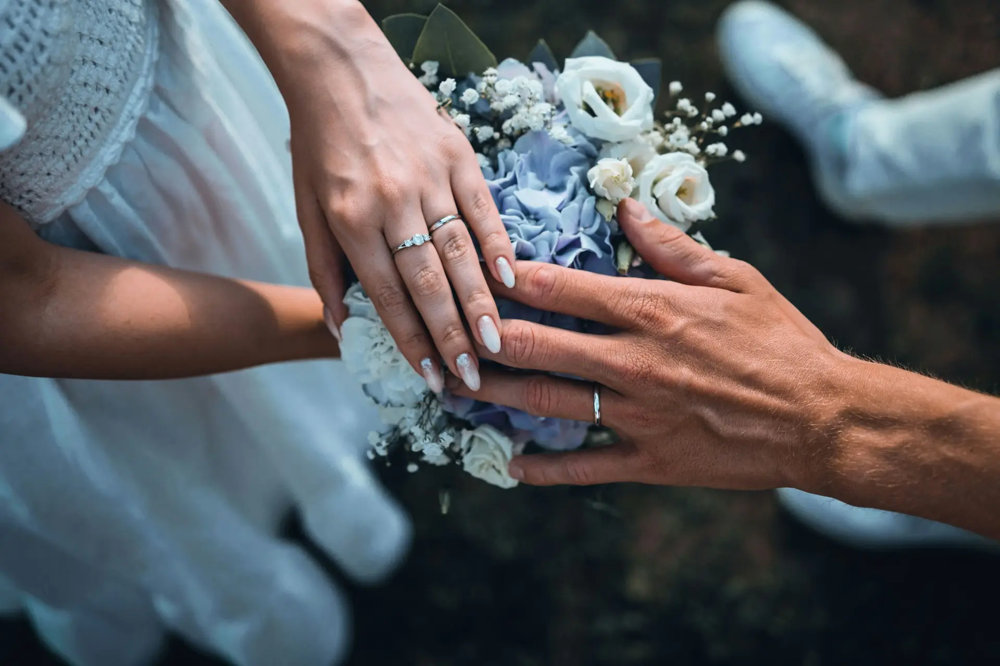

Hari yang kami tunggu akhirnya tiba. Suasana penuh cinta dan kebahagiaan terasa sejak pagi hari, ketika keluarga, sahabat, dan orang-orang tercinta berkumpul untuk menyaksikan janji suci kami.
Setiap senyum, setiap doa, dan setiap pelukan menjadi bagian tak terlupakan dari momen ini. Gaun putih, setelan rapi, dan kilau cincin hanyalah simbol — yang terpenting adalah hati kami yang kini bersatu selamanya.
Pernikahan ini bukanlah akhir dari perjalanan, melainkan awal dari bab baru yang akan kami tulis bersama, penuh cinta, tawa, dan impian yang ingin kami wujudkan.
"Pernikahan adalah janji untuk mencintai, menghargai, dan menjaga, bukan hanya di hari yang indah, tapi juga di setiap badai yang datang."